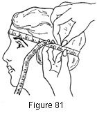

1930—Millinery Processes
by Carlotta M. Brown
MEASUREMENTS
Head Size
Since the head size of different individuals varies so greatly, it is always necessary to secure accurate individual measurements before starting any form of hat construction.
Place the measuring tape around the head at a point just above the brows in front and low enough in the back to insure comfort as well as ease in slipping the hat on and off. The prevailing style, however, has much to do with the placing of the hat on the head, so the measuring tape may be raised or lowered at the back to meet these changes. Two fingers should be slipped under the tape before the final measurement is taken (Fig. 81). The tape may then be drawn snugly together, for the space taken up by the two fingers will make up for the bulk of the material turned into the head size when the facing and the lining are attached.
Crown
The standard depth of a plain crown is 9 inches measured over the top of one half of the crown to its base.
Side Crown
A plain side crown is usually from 4 to 4½ inches in depth.
Brim
Brims are so variable in width that there is no standard measurement.